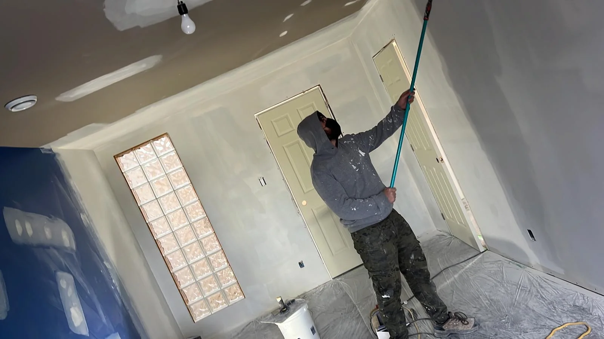
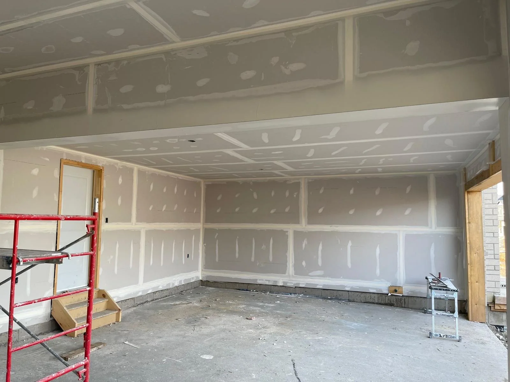
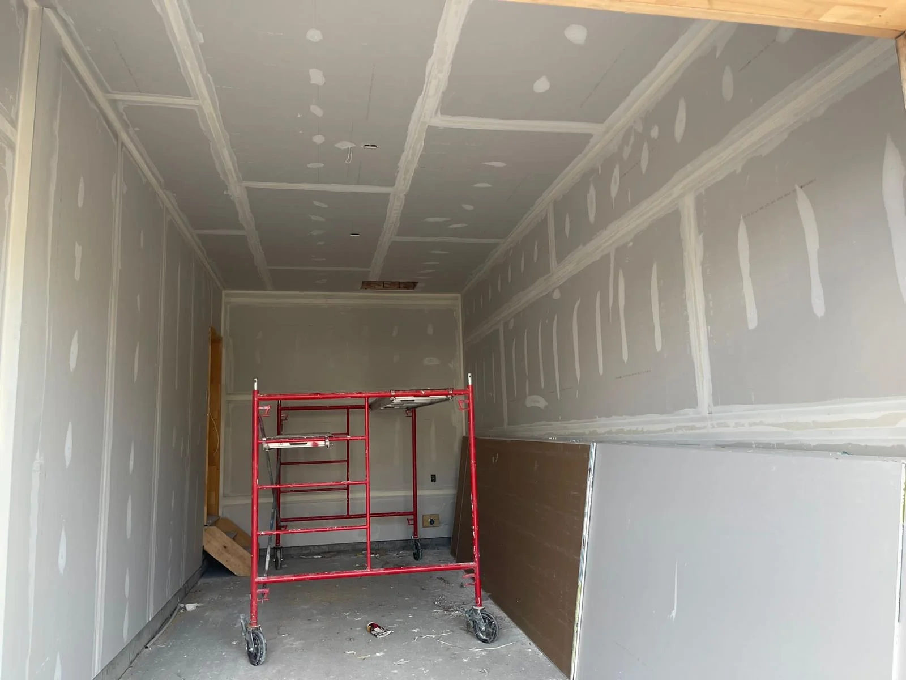
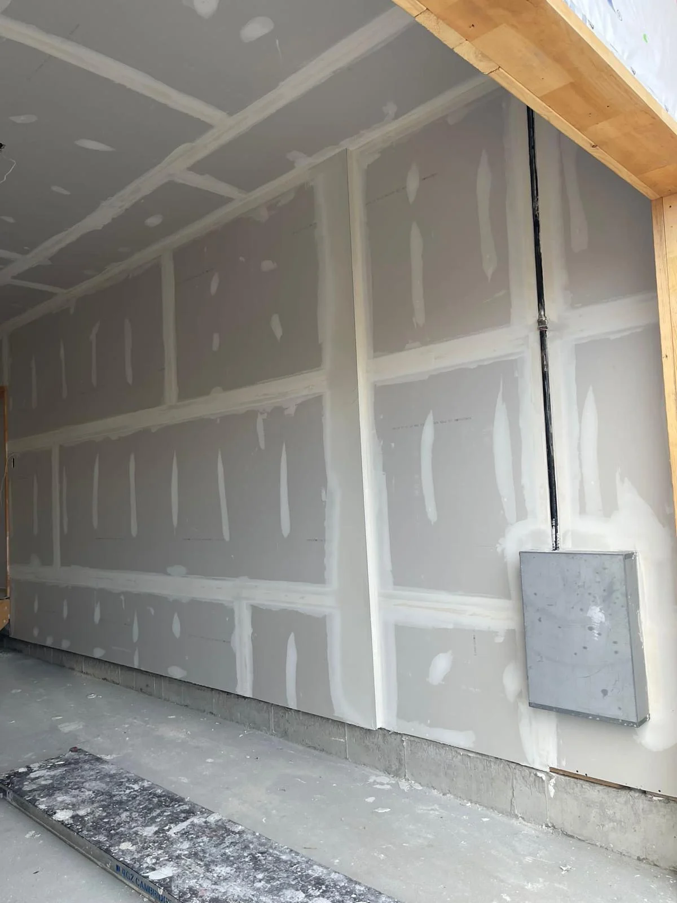

Drywall Installation
Board hung plumb and square, prepped for a flawless tape finish.
Learn More →Taping & Mudding · Scarborough, ON
Taping and mudding is the step that makes or breaks a finished wall. It's the core of what MLH Drywall Taping Painting Inc is known for across Scarborough and the GTA.
We apply a tape coat, fill coat, and finish coat on every joint, then sand smooth and inspect under raking light so seams and corners disappear completely, whether it's a straightforward flat ceiling or a vaulted space with skylights and multiple roof planes meeting at odd angles.
High ceilings and large open rooms get proper access equipment, like rolling scaffolds and ladders, not shortcuts, so the finish quality doesn't drop off as the room gets bigger. Corner bead work around windows, doors, and bulkheads gets the same multi-coat standard as flat wall seams.
Taping is also the stage that follows drywall installation and precedes painting, and we run all three in-house, so nobody is waiting on another trade or arguing about whose finish caused a visible seam. Sanding is dust-controlled with floor protection on every job, and every taping and mudding quote is free before we start.
Finish Levels
Drywall finishing is graded on a standard scale from Level 0 to Level 5, set out by the Gypsum Association. A quote that comes in surprisingly cheap is often quoting a lower level than the room actually needs, so it is worth knowing the difference before comparing prices.
The short version: Level 4 is right for most rooms, and Level 5 earns its cost in rooms with big windows, dark or glossy paint, or long uninterrupted walls. We will tell you which one your space needs when we quote it.
Recent Work

Ceiling Sanding

Garage Taping

Taping with Rolling Scaffold

Taping Around Fixtures
Keep Exploring
Board hung plumb and square, prepped for a flawless tape finish.
Learn More →Prep-first painting for a durable, even finish inside and out.
Learn More →Scrape, skim-coat, and repaint for a modern, smooth ceiling.
Learn More →Common Questions
They are two halves of the same job. Taping is bedding joint tape into compound over every seam and corner so the joint cannot move. Mudding is the coats of compound applied over that tape, each feathered wider than the last, until the joint disappears into the surrounding board. When contractors say taping they normally mean the whole sequence through to the final sand.
Level 5 is a skim coat of compound over the entire surface on top of a standard Level 4 finish. You want it under gloss or semi-gloss paint, on walls facing large windows, and on long uninterrupted walls where light crosses at an angle. For most bedrooms and hallways painted in flat or eggshell, Level 4 is the correct spec and Level 5 is money you do not need to spend.
Three is standard: a tape coat, a fill coat, and a finish coat, each wider than the one before. Butt joints often take an extra pass because there is no tapered edge to work into. Anyone offering to do it in one or two coats is quoting a lower finish level than a visible wall needs.
It depends what the texture is and how well it is bonded. A sound, lightly textured surface can often be skimmed flat. Loose, flaking or heavily built-up texture has to come off first, because new compound will only bond as well as the layer underneath it.
Yes. Sanding is dust-controlled and floors are protected on every job, and we clear the work area before we leave. Drywall dust is fine enough to travel through a house, so containment during the work matters more than cleanup afterwards.